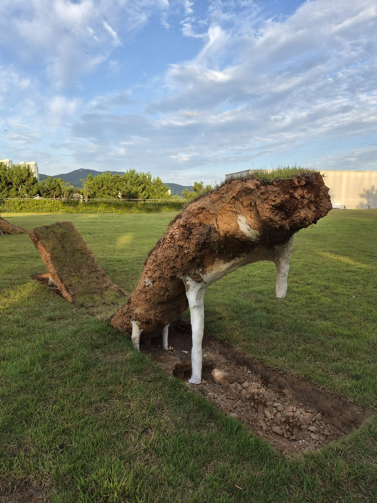
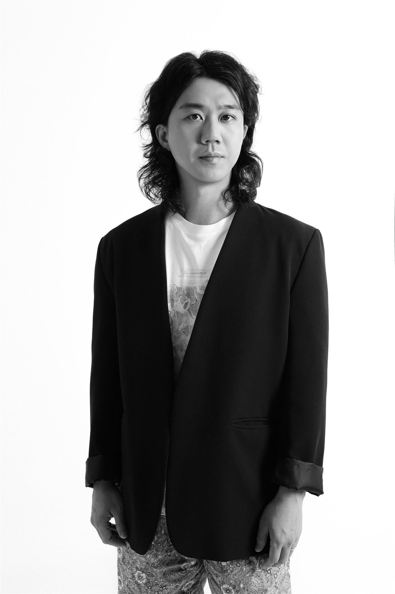

01 — Artwork
안민환 풍경조각 토대를 까는 일(2026) 흙, 잔디, 가변설치
Minhwan AnLandscape Sculpture: Laying the FoundationSoil, Grass, Dimensions variable
땅의 표면을 들어 올려, 풍경이 딛고 있던 토대를 드러낸다.
02 — Curatorial Note
기획글
우리가 바라보는 풍경은 과연 어디에서 시작될까. 바다 위에 흩어진 섬들은 서로 떨어져 있는 존재처럼 보이지만, 바다 아래에서는 하나의 대지로 이어져 있다. 《풍경 조각: 토대를 까는 일》은 이처럼 눈에 보이지 않는 연결을 드러내며, 익숙한 풍경을 새로운 시선으로 바라보도록 제안한다.
안민환의 조각은 ‘우리는 무엇으로부터 시작이 되는가’라는 질문에서 출발한다. 그의 작업에는 생성과 소멸, 몸과 공간, 기억과 풍경이 자주 등장하는데, 이는 각각 독립된 주제라기보다 인간이 세계를 경험하고 삶을 형성해 가는 여정을 탐구하기 위한 단일한 조형 언어로 수렴된다. 그는 신체가 도구가 되는 퍼포먼스적 행위를 통해 걷고, 오르고, 파고, 드러내는 과정, 즉 노동이 집약된 작업 방식을 고수한다. 이러한 반복적인 방식은 스스로 시작점(태초의 발견)을 찾아가는 수행에 가깝다.
그는 오랫동안 CUT-OUT 작업을 통해 형태를 자르고, 들어 올리는 조형 언어를 발전시켜 왔다. 이번 전시에서는 그 대상이 특정 크기의 조각을 넘어 대지 전체로 확장된다. 잔디와 땅을 절개하고 걷어내는 행위를 통해 익숙한 대지는 작품의 재료이자, 캔버스로 전환된다. 들춰진 땅 아래 드러난 흙은 새로운 생성의 가능성과 소멸의 필연성을 품고, 비워진 공간은 하늘과 숲, 바다를 담아내며 주변 환경을 작품 속으로 끌어들인다. 이렇듯 그의 풍경 조각은 고정된 물체가 아니라 자연과 시간, 그리고 관람자의 경험이 함께 완성해 가는 열린 조각이 된다.
바다와 육지가 맞닿으며 끊임없이 경계를 바꾸는 장도의 장소성은 그의 작업을 심화하는 배경이 된다. 작가는 이곳의 지질학적 구조를 CUT-OUT의 조형 원리와 연결 지으며, 섬을 고립된 대상이 아닌 같은 토대 위에 서로 다른 모습으로 이어지는 풍경으로 바라본다. 이와 같은 시각은 우리가 당연하게 여겼던 경계와 구분을 환기하고, 나아가 자연과 인간 또한 동일한 세계 안에서 서로 맞닿은 존재임을 보여준다.
여수세계섬박람회 개최를 기념하여 마련된 《풍경 조각: 토대를 까는 일》은 감춰져 있던 토대를 드러내고, 그 위에서 형성되는 관계와 연결을 발견하는 전시이다. 관람자는 작품의 형태만을 바라보기보다, 변형된 토대와 그 안에 비워진 공간, 그리고 그곳을 채우는 하늘과 바람, 빛의 변화를 천천히 따라가며 풍경을 하나의 조각으로 경험하게 된다. 그렇게 걷고 머무는 시간 속에서 자연과 인간, 섬과 대지, 생성과 소멸이 하나의 토대 위에서 서로 이어져 있음을 새롭게 깨닫게 될 것이다. 여수세계섬박람회라는 뜻깊은 계기를 맞아 장도를 찾는 모든 관람자에게, 이번 전시가 섬이라는 토대 위에서 펼쳐지는 새로운 감각적 경험의 지평을 열어주는 특별한 순간이 되기를 기대한다.
03 — Video
작품 영상
〈풍경조각 : 토대를 까는 일〉의 제작 과정과 설치 기록.
* 영상은 YouTube에서 재생됩니다.
04 — Exhibition
포스터를 탭하면 확대포스터를 클릭하면 확대
GS칼텍스 예울마루 창작스튜디오
7기 입주작가전안민환
〈풍경조각 토대를 까는 일〉
- Period기간
- 2026. 08. 25Tue10. 25Sun
- Hours운영시간
- 09:0022:00 * 물때에 따라 변동 · 휴장 장도 물때 확인
- Venue장소
- GS칼텍스 예울마루, 장도 잔디광장
05 — Artist

Minhwan An
안민환b. 1988 · 조각
조각을 통해 신체와 풍경의 관계, 확장되는 공간성을 탐구한다.
- 개인전 《CUT—OUT》(2024) 외 3회
- 신한갤러리(2024) · 문래예술공장(2023) 그룹전
- 울산북구예술창작소(2018) · 모하창작스튜디오(2017) 레지던시